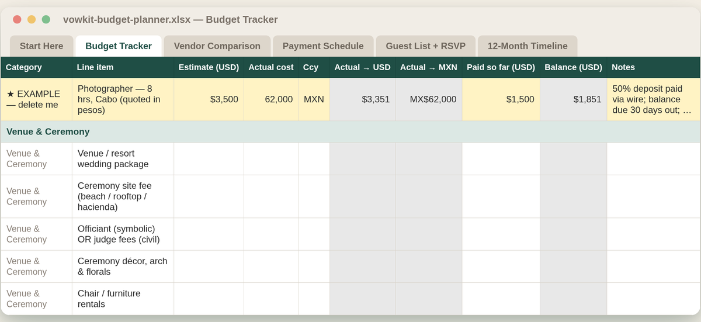
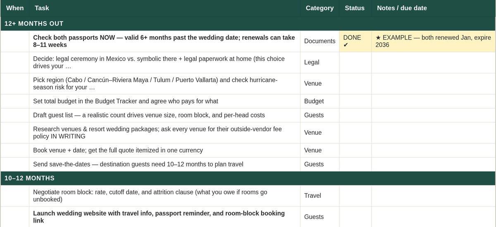
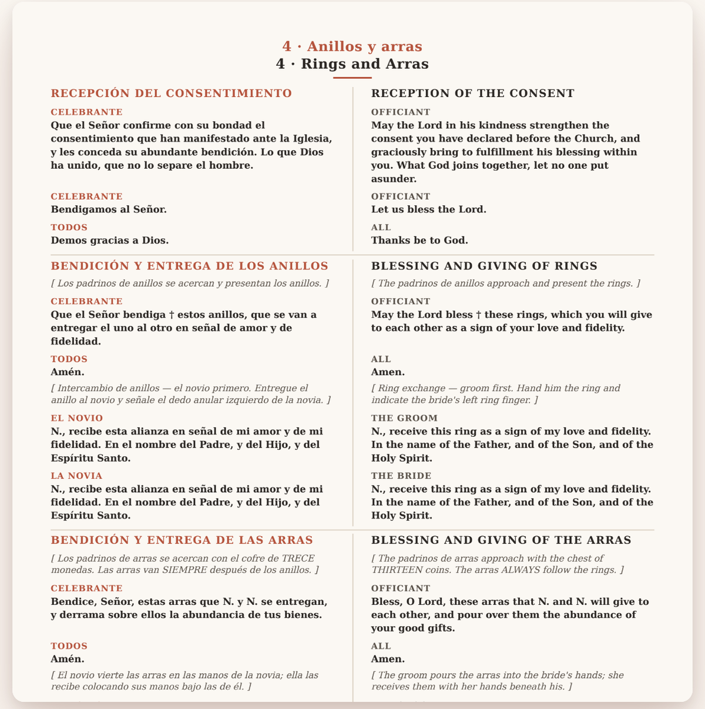

Two kits
What's in them, and who they're wrong for
Both are instant digital downloads sold through Etsy, so payment and buyer protection sit with Etsy rather than with a shop you met five minutes ago. Each one below has a section telling you not to buy it. Those sections are real.
Read the free reference first
The legal framework, the state-by-state requirements, the apostille chain and the hurricane calendar are all free on this site, in full, with sources. If that page is all you need, take it and go — that is a good outcome, not a lost sale.
The Mexico Destination Wedding Kit
US$24 flat · instant download · 3 files
You are planning a wedding in a country you don't live in, possibly in a language you don't speak, with vendors you'll meet for the first time three days before. This is the workbook and the guide for exactly that.
1 · Planning workbook — 6 sheets, .xlsx
Opens in Excel, Google Sheets, Numbers and LibreOffice. Colour coding is functional rather than decorative: it marks which cells are yours and which are calculated, so you can't quietly break a formula and find a wrong total three months later.
- Start Here — how the sheets relate, and where your exchange rate goes.
- Budget Tracker — every line converts pesos↔dollars from one exchange-rate cell. Pre-loaded with the categories destination couples forget: outside-vendor fees, guest day passes, apostille and translation fees, wire fees, cash tip envelopes, and a rate-swing buffer.
- Vendor Comparison — every quote auto-converted to USD so you can compare like with like, plus what each quote includes, an English-speaker flag, and deposit deadlines.
- Payment Schedule — every deposit and balance with an automatic days-until-due countdown. Paying vendors across a border takes longer than paying vendors at home.
- Guest List + RSVP — built for travel: passport status, room-block tracking, arrival and departure flights, dietary needs, auto-counting totals.
- 12-Month Timeline — ordered by real lead times, not tradition: passport checks at 12 months, save-the-dates at 10–12, apostilles at 6–8, room-block attrition chase at 4–6, peso envelopes at 1. A separate legal track you switch on or mark N/A depending on the legal-vs-symbolic decision.


2 · The Mexico guide — 20 pages, PDF
Ten chapters and three appendices, held to the same standard as the free page: every legal, fee and date-sensitive claim carries a marker pointing to Appendix C — Sources & Citations, with the exact URL and whether it is an Official government source or an Industry one.
- Choosing your region — honest comparison, flight access, weather and hurricane exposure
- Legal vs symbolic — the full civil workflow and a document timeline worked backwards from your date
- Money — pesos, wires, deposits and tips; how vendors actually take payment and when cash is a mistake
- Venues and room blocks — attrition clauses and the outside-vendor conversation, in writing, before you sign
- Hiring vendors across a border — vetting from 2,000 miles, WhatsApp etiquette, contract red flags
- Guests · getting your dress and décor into Mexico · wedding-week playbook · after the confetti
- Appendices: master document checklist, regional quick-reference cards, and every source, dated
3 · The part that isn't on the free page
Four copy-paste bilingual vendor emails — inquiry, quote clarification, booking and deposit, final confirmation. Written in Spanish with the English underneath so you can read your own message, bracketed for your details, and sized to paste straight into WhatsApp, which is where Mexican vendors actually conduct business. Plus a one-page Quick Start covering what to do in the first hour.
Don't buy it if
- You want design assets. No invitation templates, no signage, no colour palettes, no moodboards. This is planning apparatus and prose.
- You're not marrying in Mexico. The legal, currency and hurricane material is Mexico-specific. The workbook would still function elsewhere, but you'd be paying for the half that doesn't apply.
- You've hired a full-service planner who is already handling the paperwork. You'd be buying a second copy of their job. Buy it to check their work if you like — not to feel busy.
- You need legal advice. This is a researched consumer guide. It will repeatedly tell you to confirm with your municipal Registro Civil. That's a feature, but it means it can't be the last word.
Checkout is on Etsy. Instant download — nothing ships.
Bilingual Wedding Program & Officiant Script
US$18 flat · instant download · 15 files
Half your guests speak Spanish. Half speak English. The ceremony has to work for both, and nobody hands you the words. This is the complete wording of a bilingual Catholic wedding: the booklet your guests hold, and the script your officiant reads from, both languages in parallel columns, already in the right order.
Written by a bilingual (EN/ES) wedding professional based in Mexico — not run through a translator. If you have seen a “Spanish version” template where the lazo is captioned “rope” and the Padre Nuestro has been machine-translated back out of English, you know why that matters.
Both ceremony types, not one renamed twice
- Nuptial Mass — the full order of service with the Liturgy of the Word, the Rite of Marriage, the Liturgy of the Eucharist and Communion. Roughly 60 minutes. An 8-panel booklet.
- Ceremony outside Mass — the shorter rite, roughly 30 minutes, no Communion. A 4-panel booklet.
The traditions English templates leave out
El Lazo · Las Arras (13 coins) · Ramo a la Virgen · Padrinos de velación — each placed at the correct moment in the rite, each with one bilingual line explaining it to guests seeing it for the first time. Placement is not decorative: the arras are given after the rings; the lazo goes on after the Our Father and comes off when the Nuptial Blessing ends; the Penitential Act is omitted at a Nuptial Mass and the Gloria is sung, while outside Mass both are omitted. Padrinos are role-specific — de velación, de anillos, de arras, de lazo, de biblia y rosario, de cojines — and the files treat them that way. Checked against The Order of Celebrating Matrimony (2nd ed., USCCB 2016) and the Spanish Ritual del Matrimonio.
The officiant script
Eight pages. The full spoken ceremony in both languages with stage directions: when to switch language, who stands where, when the lazo goes on and comes off, the exact bilingual vow and ring wording, and the consent responses in both tongues. Hand it to a priest, a civil officiant, or the bilingual cousin who agreed to do this. Nobody should be improvising a translation in front of 120 people.

Everything in the download
- Bilingual Nuptial Mass program — fillable PDF booklet, 8 panels, US Letter and A4
- Bilingual ceremony-outside-Mass program — fillable PDF booklet, 4 panels, Letter and A4
- Bilingual officiant script — 8 pages with stage directions, fillable PDF, Letter and A4
- Print-ready versions of all three, already imposed for double-sided printing and folding — you print, fold, done
- Plain-text bilingual wording bank (350 lines) to paste into Canva, Word or Google Docs if you'd rather build your own layout
- A Start Here guide covering paper weight, folding, and how many to print
The form fields are real AcroForm text fields, verified typable in pdfium — the engine Chrome and Edge use — so they work in the PDF reader you already have. No Canva, no subscription, no account, no fonts to hunt down.
Don't buy it if
- Your ceremony isn't Catholic. The structure follows the Catholic Rite of Marriage. A civil or non-denominational bilingual ceremony would need most of it rewritten, and you'd be paying for liturgy you can't use.
- You want a designed invitation suite. This is ceremony wording and typography — no invitations, no signage, no save-the-dates.
- You need it to match a specific parish's printed booklet exactly. Every parish and diocese has its own customs. Send me what your priest wants and I'll tell you honestly whether the file gets you there.
Checkout is on Etsy. Instant download — nothing ships.
The honest disclosures, for both kits
- One price, all year. $24 and $18 flat. No struck-through “was $48,” no permanent 50%-off theatre, no expiring discount, no countdown. They are digital files; there is no such thing as running out.
- Brand-new shop, zero reviews. Opened September 2026. You would be an early buyer and you should price that in. Why it's stated rather than hidden.
- Instant digital download. Nothing ships. Personal use only, not for resale or redistribution.
- Standard formats. Fillable PDFs and standard spreadsheet files. No Canva account, no subscription, no software to install.
- Free updates when the Mexico guide is revised — and it will be, because these facts have a shelf life.
- Researched and written with the assistance of AI tools. Every legal, fee and date-sensitive claim is cited to its source in the appendix; all Spanish wording is written and checked by a native bilingual speaker — Latin-American ustedes, not peninsular vosotros. Editorial judgement and the conflict flags are mine.
- Not legal advice. Requirements vary by Mexican state and change. Always confirm with your venue, your coordinator, or the local Registro Civil. Liturgical content follows the Rite of Marriage, but confirm the final order of service with your priest before printing.
Questions before you buy
Ask me. I answer personally, and I'd rather talk you out of the wrong file than process a refund later. The question genuinely worth asking in advance is “which of the two booklets does my parish need” — it takes one message.